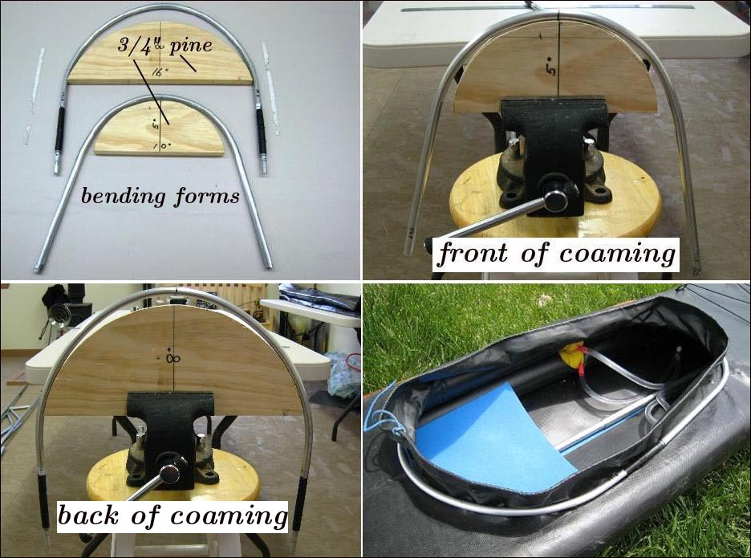

| Sonnet (Aluminum Coaming 2 of 2) | Menu Previous Page Next Page |
|
 The "bending forms" are 3/4" (19mm ) pine and are cut in a half circle with the front of coaming form being 5" deep / 10 " across (127mm /254mm) . The back of coaming form is 8" deep / 16" across (203mm /406mm). Place the forms in a vice and as seen above, Bend the 3' (91.4cm) tubing over the forms until they are approximately the shape of the forms. Some additional free bending may be required to line each end up for connection via the inserts. When both tubes are bent sufficiently, cut one or both at the ends to achive the desired length before attaching the inserts. The aluminum coaming will later be incorporated into the PVC coaming. |
|